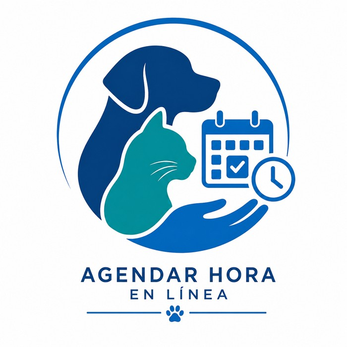

Horario de atención
Agenda semanal
Consulta los bloques disponibles antes de solicitar tu hora. Los horarios pueden variar en fechas con alta demanda, como campañas de vacunación.

Horario general
| Día | Turno mañana | Turno tarde | Atiende |
|---|---|---|---|
| Lunes | – | – | Consultas y vacunación |
| Martes | – | – | Consultas y exámenes |
| Miércoles | – | Cirugía programada | Solo con hora confirmada |
| Jueves | – | – | Consultas y vacunación |
| Viernes | – | – | Consultas y desparasitación |
| Sábado | – | No hay atención | Solo urgencias |
Próximas campañas de vacunación
| Actividad | Fecha | Horario | Cupos |
|---|---|---|---|
| Campaña antirrábica canina | – | 20 | |
| Jornada de control de peso | – | 15 |